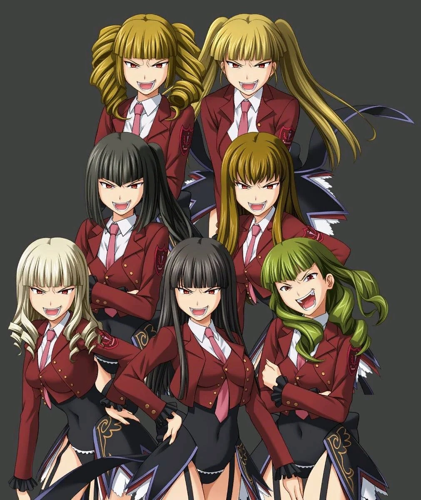

Легенда о Золотой Ведьме
«Легенда золотой ведьмы» - первая визуальная новелла серии «Когда Плачут Чайки», представленная на 72 Комикете 17 августа 2007. Первая из арки вопросов.
Введение
Добро пожаловать на Роккенджиму. Золотая Ведьма встречает вас с распростёртыми обьятиями!
Прежде всего, постарайтесь расслабиться. Тут не над чем ломать голову. Примите события, которые произойдут, как есть, молча. Это всё, о чём вас просят.
Сложность стандартная. Может, стоит для начала избрать простой путь?
Краткий сюжет
4 и 5 октября 1986 года Семья Уширомия собралась на частном острове Роккенджима на свою ежегодную семейную конференцию. Главный вопрос повестки дня касается борьбы за наследство больного главы семьи Кинзо. Но когда семья оказывается в ловушке тайфуна на острове, они получают письмо, в котором утверждается, что она от известной по слухам ведьмы острова, Беатриче, и начинают происходить таинственные события.
Персонажи
Главные персонажи
- Баттлер Уширомия
- Мария Уширомия
- Нацухи Уширомия
- Джордж Уширомия
- Джессика Уширомия
- Джордж Уширомия
Другие персонажи
Семья Уширомия
- Кинзо Уширомия
- Краусс Уширомия
- Ева Уширомия
- Рудольф Уширомия
- Роза Уширомия
- Хидэёши Уширомия
- Кирие Уширомия
Слуги
- Генджи Роноуэ
- Шаннон
- Канон
- Года Тоширо
- Кумасава Чиё
Другие
- Нанджо Терумаса
Ведьмы
- Беатриче
- Бернкастель
Справочник
Эпитафия портрета
Через родной город мой ,любимый,изобильная айю река катит воды свои.
Ты, тот кто ищет Золотую землю, за её течением вниз последуй за поисками желанного ключа.
По течению вниз спустившись,набредёшь ты на деревню.
В ней отыщи ты берег,о котором тебе расскажут двое.
Там ключ ты к Золотой земле найдёшь.
Когда же ключ ты обретёшь, отправься в путь, условия блюдя.
В первые сумерки шестерых ключ изберёт - в жертву их принеси.
Вторые сумерки настанут - оставшуюся пару разведут, в которой оба дороги друг другу.
С приходом третьих сумерек оставшиеся восславят имя благородное мое.
К четвертым голову пробьешь ты и убьешь.
А с пятыми – убьешь, грудь распоров.
С шестыми – ты убьешь, живот проткнув.
К седьмым пробьешь колено и убьешь.
К восьмым пробьешь стопу ты и убьешь.
К девятым сумеркам же возродится ведьма, и кто в живых остался – будет мертв.
К десятым сумеркам конец пути настанет – в столицу золотую ты войдешь.
Похвалит ведьма мудрых и вручит им четыре дара:
Первый – все золото, что в Золотой земле.
Второй – из праха мертвых воскрешенье.
Третий – возвращение, утраченной любви.
Четвертый – ведьме сном забыться вечным.
Спи спокойно, моя возлюбленная ведьма, Беатриче.
Письмо ведьмы I
Добро пожаловать на Роккенджиму, уважаемые члены семьи Уширомия. Меня зовут Беатриче, и я алхимик-советник этой семьи, нанятая господином Кинзо. Я служила ему много лет согласно нашему договору, но сегодня Господин Кинзо объявил о его расторжении. Посему, прошу принять мой уход с позиции алхимика-советника с сегодняшнего дня.
А теперь я обязана разъяснить вам определённую часть договора. Я, Беатриче, предоставила Господину Кинзо обширное количество золота на определённых условиях. Одно из этих условий гласит, что при расторжении договора должно быть возвращено мне. Более того, в качестве процентов я должна буду получить всё, что связано с семьёй Уширомия.
Узнав об этом, вы можете посчитать, что Господин Кинзо поступил крайне безжалостно. Однако Господин Кинзо добавил в договор особый пункт, чтобы у вас был шанс сохранить свои богатство и честь. Тогда и только тогда, когда условия этого пункта будут выполнены, я потеряю своё право на золото и проценты на веки вечные.
[ Особый пункт ]
Беатриче имеет право на возврат золота и сбор накопившихся процентов при расторжении договора. Однако если кто-либо сможет обнаружить сокрытое золото, являющееся предметом данного договора, Беатриче должна будет навсегда отказаться от этого права.
Сбор процентов начнётся в ближайшее время, но если кто-то из вас выполнит условия особого пункта, я возвращу всё, включая ту часть, что уже была собрана. Кроме того, в качестве первого шага по сбору долга Господина Кинзо, я завладела "Кольцом главы семьи Уширомия", которое символизирует передачу титула главы семьи Уширомия от одной личности к другой. Прошу вас самих в этом убедиться, изучив рисунок восковой печати.
Господин Кинзо уже выставил место нахождения золота на всеобщее обозрение под моим портретом. Правила одинаковы для всех, кто может прочитать эпитафию. Если вы обнаружите золото, я верну вам всё. Сегодня я прошу вас как следует насладиться битвой умов с Господином Кинзо. От всей души желаю, чтобы это ночь была одновременно интеллектуальной и изящной.
--- Золотая Беатриче
Письмо ведьмы II
Славьте моё имя
Письмо ведьмы III
Как вам на вкус загадка эпитафии Господина Кинзо? Как вы уже могли понять, у вас осталось очень мало времени. Прошу оставить всякие наивные надежды на побег после окончания урагана. Эта игра может закончиться только победой, моей или вашей. Когда выйдет время, вы потерпите техническое поражение. Ничьей не будет. Позаботьтесь о том, чтобы правильно оценить своё нынешнее положение.
Протокол игры ведьмы
Уширомия Краусс - погиб в первые сумерки. Избран ключом к Золотой Земле и принесён в жертву.
Уширомия Рудольф - погиб в первые сумерки. Избран ключом к Золотой Земле и принесён в жертву.
Уширомия Кирие - погибла в первые сумерки. Избрана ключом к Золотой Земле и принесён в жертву.
Уширомия Роза - погибла в первые сумерки. Избрана ключом к Золотой Земле и принесён в жертву.
Прислуга Шаннон - погибла в первые сумерки. Избрана ключом к Золотой Земле и принесён в жертву.
Тоширо Года - погиб в первые сумерки. Избран ключом к Золотой Земле и принесён в жертву.
Уширомия Ева - погибла во вторые сумерки. Лоб пронзён кинжалом Асмодея.
Уширомия Хидэёши - погиб в вторые сумерки. Лоб пронзён кинжалом Вельзевула.
Уширомия Кинзо - погиб в четвёртые сумерки сумерки. Лоб пробит кинжалом Мамоны.
Прислуга Канон - погиб в пятые сумерки. Грудь пробита кинжалом Сатаны.
Прислуга Генджи - погиб в шестые сумерки. Живот пронзён кинжалом Люцифера.
Лечащий врач Нанджо - погиб в седьмые сумерки. Колено пробито кинжалом Вельфегора.
Прислуга Кумасава - погибла в восьмые сумерки. Нога пробита кинжалом Левиафана.
Ведьма Беатриче - Возрождена в девятые сумерки. Наконец-то открывает дверь в Золотую Землю.
Уширомия Нацухи- погибла в девятые сумерки. Её благородство было оценено, и ей было позволено сойтись с ведьмой на дуэли.
Уширомия Джордж - пропал без вести в десятые сумерки. Признал ведьму, пал ниц пред ней и был приглашён в Золотую Землю.
Уширомия Джессика - пропала без вести в десятые сумерки. Признала ведьму, пала ниц пред ней и была приглашёна в Золотую Землю.
Уширомия Мария - пропала без вести в десятые сумерки. Признала ведьму, пала ниц пред ней и была приглашёна в Золотую Землю.
Уширомия Баттлер - пропал без вести в десятые сумерки. Отрицает существование ведьмы. Пригласит ли она его в Золотую Землю?
Обрез ружья мод. Кинзо
Выполненный на заказ обрез одного популярного во времена Дикого Запада ружья. Эта модификация значительно увеличивает портативность и старомодность в обмен на огромное сокращение дальности стрельбы. В дополнение, последовательные выстрелы могут быть совершены со скоростью пистолета, если достаточно умело сработать рычагом перезарядки.
Кроме того, перед перезарядкой одной рукой, возможной благодаря характерной рукояти рычага перезарядки, не сможет устоять ни один настоящий любитель старых вестернов.
Для соответствия личным предпочтениям Кинзо, он был сделан под патроны ".45 Colt". Обрез вмещает 4+1 патронов.
Семь кинжалов Чистилища

Кинжалы, содержащие семь магий, соответствующих семи смертным грехам. Повинуясь приказам своего господина, они с идеальной точностью всверливаются в желаемую точку цели.
Так как они летают на очень высоких скоростях и свободно меняют направление движения, отскакивая от стен и прочих препятствий, у них нет мёртвых зон, и они непременно попадают в цель, вне зависимости от того, за чем она прячется. Также их сила может быть настроена на часть тела, которую им нужно поразить.
Они являются невероятно мощным оружием, но невинный человек, не совершивший ни одного из семи смертных грехов или наделённый большой сопротивляемости к магии, не может стать их целью.
Ответы
Преступник
Саё Ясуда, одетый в основном как Канон, так как ему пришлось "убить" Шаннон во время первых сумерек.
Сообщники
Генджи, Кумасава, Нанджо, Ева, Хидэёши.
Перед убийствами
Саё, одетый как Канон, сыграл роль Беатриче и отдал письмо Марии. Так как Мария уже привыкла к тому, что Беатриче "получала контроль" над такими слугами, как Канон и Шаннон, она приняла её за Беатриче. Саё подкупил Еву и Хидэёши золотом, которое он унаследовал от Кинзо, чтобы они помогли ему с убийствами. Они не знали, что Канон планировал их убить по-настоящему (как видно, когда Ева утверждала Баттлеру, что на лицах жертв был макияж, а не кровь).
Первые сумерки
Канон пригласил Краусса, Розу, Году, Кирие и Рудольфа в столовую, где он застрелил всех пятерых. С помощью Генджи он перенёс трупы в сарай и запер их. Он сказал Хидэёши и Еве делать вид, что в сарае был труп Шаннон, когда его на самом деле тамне было, чтобы подделать смерть его другой персоны Шаннон. Канон затем проверил комнату Нацухи и увидел талисман, который висел на двери. Чтобы создать идею «ведьма, которая не может касаться талисмана со скорпионом", он снова закрыл дверь и размазал её красной краской, чтобы напугать Нацухи.
"Иллюзии к иллюзиям. Трупы, которые не могут вернуться в землю, возвращаются в иллюзии." — Уиллард Х. Райт.
Вторые сумерки
Так как Саё заметил, что высока вероятность предательства Евы и Хидэёши (из-за ссоры с чеком между Нацухи и Евой, даже при том, что Саё сказал ей, что смерть Кинзо не должна вызвать панику), он решил убить их на вторых сумерках. Как Канон, он постучал в дверь их комнаты, утверждая, что хочет обсудить следующий шаг плана убийства. Он застрелил их в голову и воткнул кинжалы в дыры от пуль. После этого он сделал вид, что комната была заперта, когда он нашёл трупы, тем самым создав закрытую комнату.
"Иллюзии к иллюзиям. Цепь иллюзий может сдержать только иллюзии." — Уиллард Х. Райт
Четвертые сумерки
Так как Кинзо был мертв, не было трудно воткнуть кинжал в его голову и поместить его тело в бойлер.
"Иллюзии к иллюзиям. Пусть человек иллюзий отправится в место, которому принадлежит."— Уиллард Х. Райт
Пятые сумерки
Канон побежал в бойлерную, делая вид, что услышал преступника. У Саё случился внутренний конфликт: продолжать убийства или нет? Это был бой между Каноном и Беатриче. Он решил продолжать убийства "убив" Канона. После этого Саё испачкал себя кровью, и положил рядом окровавленный кинжал, чтобы изобразить смертельно раненного Канона. Нанджо, один из его сообщников, сказал, что Канон умер, и все ушли. Это позволило Саё свободно передвигаться, в то время как все остальные были заперты в кабинете Кинзо.
"Иллюзии к иллюзиям. Ведьма и кол иллюзий не может пронзить ничего, кроме иллюзий." — Уиллард Х. Райт
Шестые, седьмые, восьмые сумерки
Саё заставил Марию, Генджи, Кумасаву или Нанджо (скорее всего Генджи) положить письмо на стол, что привело к тому, что Нацухи выгнала их из кабинета. Саё, одетый как Беатриче, убил всех, кроме Марии. Он тогда позвонила в студию и сказал Марии петь. Мария, у которой был ключ от комнаты, делала всё, что говорил Саё.
"Иллюзии к иллюзиям. Иллюзией была песня слепой девочки. Иллюзия закрытой комнаты." — Уиллард Х. Райт
Девятые сумерки
Саё, одетый как Беатриче, выманил Нацухи с помощью письма, в котором было написано: "Уширомия Нацухи, давайте решим, кто из нас больше подходит на роль главы семьи. Я буду ждать вас перед своим портретом. — Ребёнок 19 лет". Нацухи нашла ее и вызвала на дуэль, но без ведома Нацухи ее ружьё оказалось без патронов. Саё выстрелил первой.
Десятые сумерки
После того, как кузены вышли из комнаты, Саё встретил их. Часы прозвенели полночь, и бомба убила всех пятерых.
Музыка
1. Роза [薔薇]
2. Когда плачут чайки [うみねこのなく頃に]
3. Врата лета [夏の扉]
4. HANE
5. Ride on
6. Towering cloud in summer
7. Sea
8. В час угрюмый [暗闇の刻]
9. Novelette
10. hope
11. Бледная тень [白い影 ]
12. Идиллия [てくてく]
13. Лунная ночь [月夜]
14. Тигровая лилия [透百合]
15. На пороге смерти [隣死]
16. В тёмном коридоре [煉沙回廊]
17. Fortitude
18. witch in gold (cembalo)
19. Искушение [誘い]
20. Рыбный аромат [胡散の香り]
21. stupefaction
22. Praise
23. Pass
24. ageha
25. goldenslaughterer
26. worldend (bp)
27. Ведьма с картины [絵画の魔女]
28. suspicion
29. Острая струна [痕音]
30. Core
31. Minute darkness
32. nightyes
33. Closed My Heart
34. Requiem
35. mind
36. Worldend
37. play
38. System0 [システム零]
39. Voiceless
40.dead angle
41. Bring the Fate
42. 1 Струнный квартет в G-Мажоре - Аллегро [弦楽四重奏曲第一番ト長調-I.Allegro]
43. オルガン小曲 第6億番 ハ短調
44. Сброс ОКОВ [牢獄 STRIP]